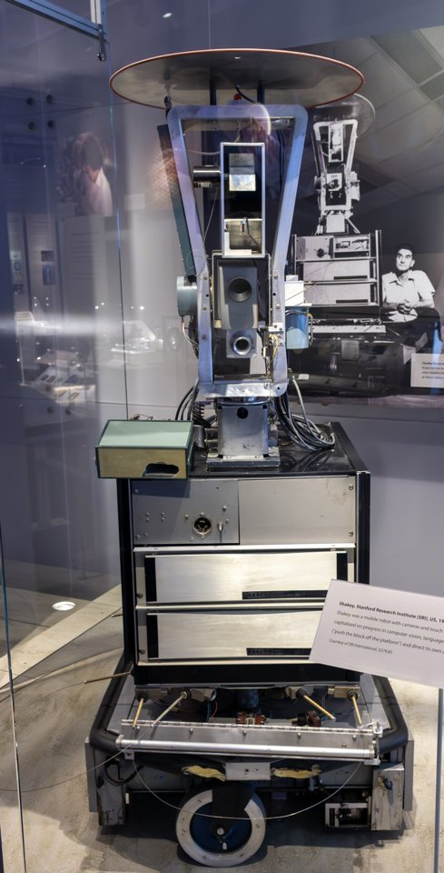
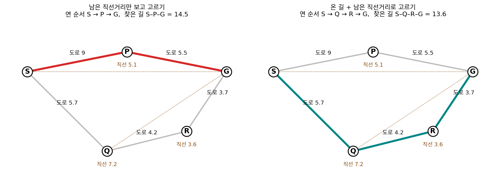
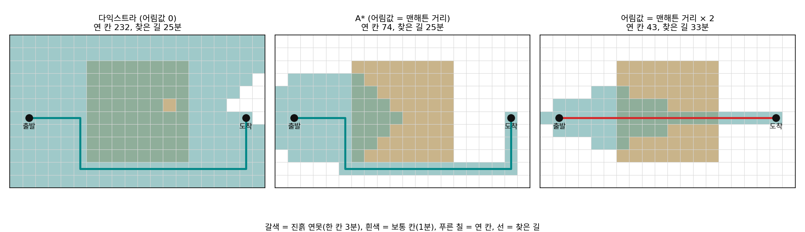
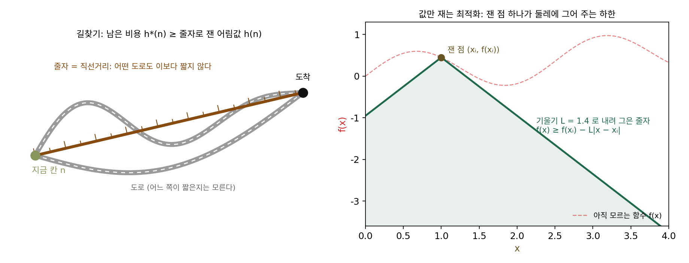
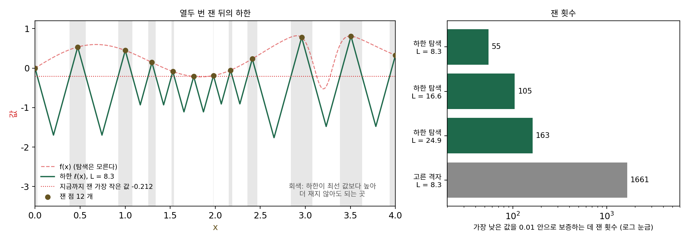
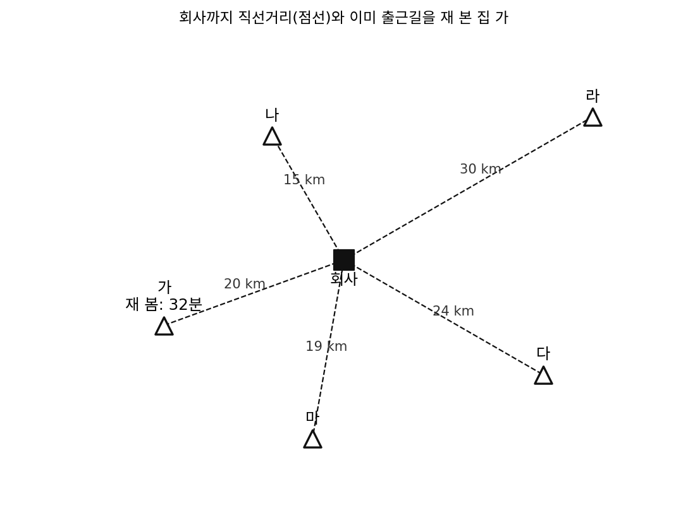
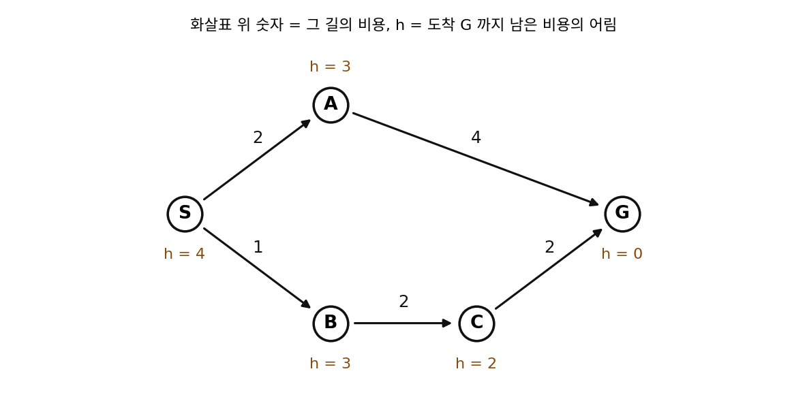
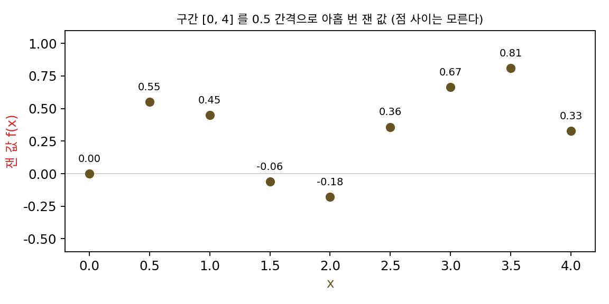
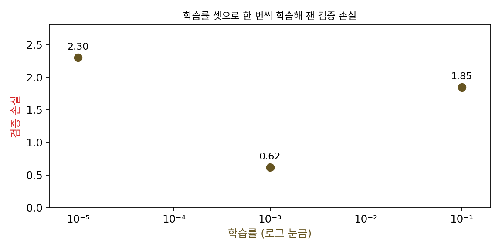

구조를 쓰는 탐색: 값만 잴 때 무엇을 더 알면 덜 재나
A*와 가지치기: 하한으로 안 볼 곳 고르기
개미 군집은 좋았던 길을 냄새로 기억해 좋은 답을 빨리 모으지만, 그 답이 가장 짧다고 보증하지는 않는다. 보증까지 받으려면 다시 한 칸씩 확정해 나가야 한다. 동적 계획법처럼 출발점에서 가까운 칸부터 「여기까지 오는 가장 싼 비용」을 확정해 나가면 가장 싼 길을 틀림없이 찾는다. 그런데 이 방법은 도착점이 어느 방향에 있는지 모르는 채로 사방으로 고르게 퍼져서, 서울에서 부산으로 가는 길을 찾는데 강릉과 인천 방향의 길까지 똑같이 열심히 따진다. 사람은 부산이 남동쪽에 있고 거기까지 직선으로도 300 km 넘게 남았다는 것을 알기 때문에 북쪽 길은 처음부터 보지 않는다. 도착점까지 남은 비용을 조금이라도 알면 볼 곳을 줄일 수 있을 것 같은데, 남은 비용을 「대충」 알아도 될까? 대충 아는 값을 믿고 어떤 길을 버렸다가 그 길이 사실 가장 싼 길이었다면 어떻게 될까?
역사: 셰이키의 길찾기와 하트·닐슨·라파엘의 1968년 논문
1966년 미국 스탠퍼드 연구소(Stanford Research Institute, 지금의 SRI 인터내셔널)의 인공지능 그룹은 카메라를 달고 바퀴로 움직이는 로봇을 만들기 시작했다. 방 안을 보고 무엇이 어디 있는지 알아낸 뒤, 스스로 계획을 세워 목적지까지 움직이는 로봇이었다. 계획을 이끈 찰스 로젠(Charles Rosen)은 이름을 한 달쯤 고민하던 끝에, 그룹의 한 사람이 「몹시 흔들리며 돌아다니니 그냥 셰이키(Shakey)라고 부르자」고 했다고 회고했다. 셰이키 사업은 1972년까지 이어졌고, 셰이키는 지금 미국 컴퓨터 역사 박물관에 있다.

셰이키가 장애물을 피해 방을 건너려면 갈 수 있는 자리들을 점으로, 오갈 수 있는 곳을 선으로 이은 그래프에서 가장 짧은 길을 찾아야 했다. 같은 그룹의 피터 하트(Peter Hart), 닐스 닐슨(Nils Nilsson), 버트럼 라파엘(Bertram Raphael)은 1967년 11월에 보낸 원고를 1968년 7월 『IEEE 시스템 과학과 사이버네틱스 회보』에 실었다(「최소 비용 경로를 휴리스틱으로 정하는 일의 형식적 기초」). 논문 머리말은 당시의 길찾기 방법을 두 가지 접근으로 나눴다. 그래프의 성질을 따지는 수학적 방법은 어떤 그래프에서도 가장 짧은 길을 찾는다는 보장이 있었지만, 계산을 해낼 수 있는지보다 답에 닿는지를 더 따졌다. 1959년 에츠허르 다익스트라(Edsger Dijkstra)가 세 쪽짜리 글로 낸, 출발점에서 가까운 점부터 거리를 확정해 나가는 방법도 이런 방법이다. 문제에 대해 아는 것을 써서 빨리 찾는 휴리스틱 방법(경험에서 나온 요령으로 찾는 방법)들은 효율은 좋았지만 가장 짧은 길을 찾는다는 보장이 없었다.
전해지는 이야기로는, 닐슨이 처음 셰이키에 쓰자고 한 방법은 그래프 트래버서(Graph Traverser)라는 방법으로, 도착점까지 남은 거리의 추정값만 보고 다음에 볼 점을 골랐다. 라파엘이 거기에 출발점에서 이미 온 거리를 더해서 고르자고 했고, 하트가 그렇게 해도 가장 짧은 길을 놓치지 않으려면 추정값이 지켜야 할 조건을 세웠다고 한다. 남은 거리만 보면 왜 모자란지는 도시 다섯 개로 그려 보면 바로 보인다.

논문은 두 접근을 하나로 묶었다. 논문이 든 예는 도시와 도로였다. 도시 사이의 가장 짧은 도로는 두 도시 사이의 항공 거리(직선거리)보다 짧을 수 없다는 지식을 쓰면, 따져 봐야 할 도시의 수를 줄이면서도 가장 짧은 길을 놓치지 않는다는 것이다. 논문은 이렇게 고른 방법을 「A*」(에이 스타)라 불렀고, 가벼운 가정 아래에서 같은 정보를 받은 방법들 가운데 가장 짧은 길을 보장하는 데 필요한 만큼만 점을 연다는 것을 증명했다.

지도 앱이 1초 만에 길을 찾아 주는 걸 보면, 남은 직선거리를 더하는 건 누구나 떠올릴 생각 같은데요.

1968년 논문 머리말을 다시 볼까요. 그때 길찾기 방법은 두 가지 접근으로 나뉘었다고 했죠. 각 접근은 무엇을 갖고 무엇이 없었어요?

수학 쪽은 가장 짧은 길이라는 보장이 있었지만 계산량은 덜 따졌고, 휴리스틱 쪽은 빨랐지만 보장이 없었어요. 둘 다 가진 방법이 없었던 거네요.

셰이키는 방을 건널 때마다 그 계산을 직접 해야 하는 로봇이었어요. 빨리 찾는 요령이 엉뚱한 길을 내놓아도, 그게 엉뚱한지 알려 줄 기준이 없었고요.

그럼 하트가 세운 조건이 그 기준이에요? 남은 거리를 더하는 건 라파엘 생각이었다면서요.
더하기만 하면 언제 맞는지는 모르죠. 「이 요령을 쓰면 무엇을 버려도 괜찮은가」를 증명으로 말해 준 게 논문의 일이었어요.

논문의 예가 직선거리였으니까 조건은 「직선거리처럼 실제보다 길게 나오지 않는다」쯤일 것 같은데요. 실제보다 길게 나오는 추정을 쓰면 정말 길을 놓쳐요?
20 × 12 격자에서 진흙 연못 돌아가기
추정값이 실제보다 길게 나오면 어떻게 되는지는, 가장 짧은 길이 직선에서 크게 벗어나는 지도에서 시험하는 것이 좋다. 가로 20칸, 세로 12칸 격자에서 위아래·좌우로만 움직이고, 보통 칸은 지나는 데 1분, 가운데 8 × 8 칸을 차지한 진흙 연못 칸은 3분이 걸린다. 출발 칸은 왼쪽 (1, 6), 도착 칸은 오른쪽 (18, 6)이라 그 사이에 연못이 가로놓여 있다. 연못을 곧장 건너면 33분이고, 아래로 돌아가면 25분이다.
칸을 「연다」는 것은 그 칸까지 오는 가장 싼 비용을 확정하고, 그 칸의 이웃들로 가는 비용을 계산하는 일이다. 탐색은 아직 열지 않은 칸 가운데 하나를 골라 여는 일을 도착 칸을 열 때까지 되풀이한다. 다음에 열 칸은 「출발에서 그 칸까지 이미 온 비용」에 「그 칸에서 도착까지 남은 비용의 추정값」을 더한 수가 가장 작은 칸으로 고른다(같으면 이미 온 비용이 큰 칸을 먼저). 추정값으로 세 가지를 써 보았다. 0을 쓰면 다익스트라 알고리즘이 되고, 맨해튼 거리(도착 칸까지 남은 가로 칸 수와 세로 칸 수의 합)를 쓰면 A*, 맨해튼 거리의 두 배를 쓰면 부풀린 추정이다.
| 남은 비용의 추정값 | 연 칸 (240칸 가운데) | 찾은 길 |
|---|---|---|
| 0 (다익스트라) | 232 | 25분 (아래로 돌아감) |
| 맨해튼 거리 | 74 | 25분 (아래로 돌아감) |
| 맨해튼 거리 × 2 | 43 | 33분 (연못을 건넘) |

맨해튼 거리는 남은 칸을 모두 1분짜리 보통 칸으로 지난다고 친 값이라 어느 칸에서도 실제로 남은 비용보다 크지 않다. 출발 칸에서 맨해튼 거리는 17분이고 실제로 남은 비용은 25분이다. 두 배로 부풀린 추정은 출발 칸에서 34분이 되어 실제 25분을 넘는다. 탐색은 아래로 돌아가는 칸들을 「거기로 가면 비싸다」고 믿어 열지 않았고, 도착 칸에 33분으로 먼저 닿자 33분을 답으로 내놓았다. 연 칸 수는 다익스트라 232, A* 74, 부풀린 추정 43으로 줄었지만, 부풀린 추정이 열지 않은 칸 가운데 정답 길의 칸이 들어 있었다.
A* 가 칸을 고르는 수는 이미 온 비용과 남은 비용의 추정값을 더한 것이다.
오른쪽 부등식처럼 어느 칸에서도 실제로 남은 비용을 넘지 않는 추정값을 허용 가능한 휴리스틱 (남은 비용의 하한이 되는 추정 / admissible heuristic)이라 한다. 추정값이 하한이면 g + h 는 「이 칸을 거쳐 가는 길은 아무리 싸도 이만큼 든다」는 하한이 된다. 도착 칸을 연 순간 그 비용은 아직 열지 않은 모든 칸의 하한보다 작거나 같으므로, 열지 않은 칸을 거치는 길 가운데 더 싼 것은 있을 수 없다. 열지 않은 칸을 버려도 되는 것은 그 칸의 하한이 이미 찾은 답보다 높기 때문이고, 이렇게 하한으로 볼 필요 없는 곳을 잘라 내는 일을 가지치기라 부른다. 하한이 0이면 아무것도 잘라 내지 못해 다익스트라 알고리즘처럼 사방으로 퍼지고, 하한이 실제 남은 비용에 가까울수록 많이 잘라 낸다. 다만 추정값이 하한이 아니면 잘라 낸 곳에 답이 있을 수 있다.
남은 비용의 하한을 직선으로 재는 줄자를 떠올리면 기억하기 쉽다. 도로가 아무리 구불구불해도 두 점 사이를 팽팽하게 당긴 줄자보다 짧을 수는 없으니, 줄자로 잰 값은 언제나 하한이다. 줄자 대신 「대충 이 정도 걸리겠지」 하는 눈대중을 쓰면 그 눈대중이 실제보다 길게 나오는 순간 좋은 길을 버린다.

0차로 돌아오기: 립시츠 상수가 주는 하한
값만 재는 0차 최적화에도 줄자가 있을까? 길찾기의 줄자가 「도로는 직선보다 짧을 수 없다」는 지식에서 나왔듯이, 함수에서 줄자를 만들어 주는 지식은 립시츠 연속이다. 두 점 사이 기울기가 립시츠 상수 L 을 넘지 않는 함수라면, 곡선 위 한 점에 기울기 ±L 인 두 직선을 그은 원뿔(옆에서 보면 X자) 안에 곡선 전체가 들어 있다. 원뿔의 아래 반쪽만 쓰면, 한 번 잰 점 xᵢ 에서 거리 |x − xᵢ| 만큼 떨어진 곳의 값은 f(xᵢ) − L|x − xᵢ| 보다 낮을 수 없다. 여러 점을 쟀으면 그 가운데 가장 높은 하한을 쓴다.
하한 ℓ(x) 가 지금까지 잰 가장 작은 값보다 높은 구간에는 더 작은 값이 있을 수 없으니 재지 않아도 된다. A* 와 같은 가지치기다. 어디를 다음에 잴지도 A* 처럼 정할 수 있는데, 하한이 가장 낮은 자리가 「아직 가장 작은 값이 숨어 있을 수 있는 곳」이므로 거기를 잰다. 재고 나면 그 자리의 하한이 실제 값으로 올라가고, 지금까지 잰 가장 작은 값과 하한의 가장 낮은 값의 차이가 정한 크기 아래로 줄면 멈춘다. 그때는 아무 데도 재지 않고도 「가장 작은 값은 이것보다 0.01 넘게 작지 않다」고 보증할 수 있다. 소련 쿠이비셰프(지금의 사마라)의 S. A. 피야브스키(S. A. Piyavskii)가 1970년 4월에 투고해 1972년 『계산수학과 수리물리학 저널』에 실은 논문과, 같은 해 미국 『SIAM 수치해석 저널』에 실린 B. O. 슈버트(B. O. Shubert)의 논문이 각자 이 방법을 냈다.
구간 [0, 4] 에서 이 책이 지은 함수 f(x) = 0.5 sin 2.5x + 0.15x − 1.5 exp(−((x − 3.2)/0.15)²) 로 시험해 보자. x ≈ 1.84 에 넓은 골짜기(값 −0.221)가 있고, x = 3.2 에 폭이 좁지만 더 깊은 골짜기(값 −0.525)가 있다. 가장 가파른 곳의 기울기가 8.28 이므로 L = 8.3 으로 둔다. 양 끝 두 점에서 시작해 하한이 가장 낮은 곳을 열두 번째 점까지 재면, 구간의 30% 쯤은 하한이 지금까지 잰 가장 작은 값 −0.212 보다 높아 더 볼 필요가 없어진다. 끝까지 이어 가면 55번 재고 x = 3.200 의 −0.5253 에서 멈추고, 55번 가운데 23번은 좁은 골짜기 [3.0, 3.4] 안에서 잰다. 같은 보증을 고른 간격의 격자로 얻으려면 어느 자리도 가장 가까운 격자점에서 0.01/L = 0.0012 안에 있어야 하므로, 간격 0.0024 로 1,661 점을 재야 한다.

L 을 크게 잡을수록 하한은 안전해지지만 낮아져서, 잘라 내는 구간이 줄고 잰 횟수가 늘어난다. 길찾기에서 추정값을 0으로 두면 다익스트라 알고리즘처럼 사방을 다 보는 것과 같다. 그런데 실제 문제에서는 L 을 모르는 일이 많다. 1993년 도널드 존스(Donald R. Jones), C. D. 페르투넨(C. D. Perttunen), B. E. 스터크먼(B. E. Stuckman)은 「립시츠 상수 없는 립시츠 최적화」라는 논문에서 DIRECT(DIviding RECTangles, 직사각형 나누기)를 냈다. 그들은 L 을 「구간 전체를 고르게 볼지, 좋아 보이는 곳 둘레를 자세히 볼지」의 무게로 읽었다. 하나의 L 을 고르는 대신, 가능한 모든 L 가운데 어느 하나로라도 하한이 가장 낮아지는 직사각형들을 한꺼번에 나눠 잰다.
ML에서: 하이퍼파라미터 탐색에서 재지 않을 곳 고르기
학습률이나 정규화 세기를 고를 때 한 번 재는 데는 학습 한 번이 든다. 세드리크 말레르브(Cédric Malherbe)와 니콜라 바야티스(Nicolas Vayatis)는 2017년 논문 「립시츠 함수의 전역 최적화」에서 학습 시스템의 하이퍼파라미터 맞추기를 이런 문제의 예로 들고, LIPO 라는 방법을 냈다. 후보 자리를 무작위로 뽑되, 지금까지 잰 점들로 만든 립시츠 경계가 「여기서는 지금까지의 최선보다 나아질 수 없다」고 말하는 자리는 재지 않고 버린다. L 을 모르는 경우를 위해 잰 값에서 L 을 함께 추정해 가는 판도 냈다. 실제 학습률 탐색에서 어느 범위를 버릴 수 있는지는 아래 문제 14에서 직접 계산해 본다.
문제 11. 이사할 집 고르기
이사할 집 후보가 다섯 곳이고, 회사까지 직선거리는 가 20 km, 나 15 km, 다 24 km, 라 30 km, 마 19 km 다. 가는 이미 출근길을 재 보아 32분이 걸렸다. 이 도시에서는 어떤 길로 가도 직선거리로 따져 시속 40 km 보다 빨리 갈 수 없다고 하자. (가) 출근길을 재 보지 않고도 가보다 빠를 수 없다고 말할 수 있는 집은 어디인가? (나) 친구가 「이 도시 출퇴근 평균 속도는 시속 25 km 쯤이니 그 속도로 계산하는 게 더 현실적」이라며 그 계산으로 32분이 넘는 집을 거르자고 한다. 그렇게 거르면 무엇을 놓칠 수 있는가?

(가)부터 할게요. 시속 40 km 면 1 km 에 1.5분이니까, 아무리 빨라도 나 22.5분, 다 36분, 라 45분, 마 28.5분이 걸려요. 가가 32분이었으니까 다와 라는 재 볼 필요가 없고, 나와 마는 재 봐야 해요.
그런데 시속 40 km 는 너무 빠르잖아. 출근 시간엔 막히는데. 평균 시속 25 km 로 하면 나 36분, 마 45.6분이니까 둘 다 32분을 넘어. 그럼 더 재 볼 것 없이 가로 정하면 되겠다.
가를 같은 평균 속도로 계산하면 몇 분이 나오죠?

20 km 를 시속 25 km 로… 48분이요. 그런데 실제로 재 보니 32분이었으니까, 가에서는 평균 속도 계산이 16분이나 길게 나왔네요.
가가 지하철역 바로 앞이라 그랬을 수도 있겠다. 나도 역 가까이 있으면 평균보다 훨씬 빠를 수 있잖아.
실제로 재 보니 나는 28분, 마는 35분이었어요.

평균 속도로 걸렀으면 가장 빠른 나를 재 보지도 않고 버렸겠네요. 평균은 집마다 실제보다 짧게도 길게도 나오는데, 길게 나온 집을 버리는 데 쓰면 안 되는 거예요.
그럼 집마다 보면 덜 현실적인 시속 40 km 계산을, 버릴 때는 오히려 써야 하는 거예요?

그래요. 버리는 근거로 쓰는 계산은 어느 집에서도 실제보다 길게 나오면 안 돼요. 시속 40 km 계산은 어디서도 실제보다 길지 않으니, 그걸로 버린 다와 라에는 가보다 빠른 집이 있을 수 없어요. 그 대가로 나와 마는 직접 재야 하고요. 「아무리 운이 좋아도 이만큼은 걸린다」는 값으로만 버리고, 그 값이 실제보다 많이 낮으면 재 볼 집이 조금 늘어날 뿐이에요.
문제 12. 추정값 하나를 부풀리면
점 S 에서 G 로 가는 그래프가 있다. 길과 비용은 S→A 2, S→B 1, A→G 4, B→C 2, C→G 2 이고, 남은 비용의 추정값 h 는 S 4, A 3, B 3, C 2, G 0 이다. (가) 모든 h 가 실제로 남은 비용을 넘지 않는지 확인하고, A* 가 점을 여는 순서와 찾는 길을 구하라(같은 수면 이미 온 비용이 큰 점을 먼저 연다). (나) h(B) 만 6으로 바꾸면 어떻게 되는가? (다) h 를 모두 0으로 두면 몇 개의 점을 여는가?

실제로 남은 비용부터 뒤에서 거꾸로 셀게요. C 는 2, B 는 B→C→G 로 4, A 는 4, S 는 B 를 거쳐 5예요. 주어진 h 는 4, 3, 3, 2, 0 이라 모두 실제 값 이하네요.
그럼 A* 를 손으로 돌려 봐요. S 를 열면 무엇이 후보가 되죠?
A 는 이미 온 비용 2에 h 3을 더해 5, B 는 1 + 3 = 4 라 B 를 먼저 열어요. B 를 열면 C 가 3 + 2 = 5 가 되는데, A 도 5 라서 같아요.
같으면 이미 온 비용이 큰 점을 먼저 연다고 했으니까 C(3)가 A(2)보다 먼저야. C 를 열면 G 가 5 + 0 = 5 로 올라오고, 다음에 G 를 열어서 끝. S, B, C, G 순서로 열고 S–B–C–G 로 5 예요.
(나)는요?
h(B) 가 6이면 B 의 수가 1 + 6 = 7 이 돼서 A(5)가 먼저 열려요. A 를 열면 G 가 2 + 4 = 6 으로 올라오고, 6이 B 의 7보다 작으니까 G 를 열고 끝나요. S–A–G, 비용 6이요.
가장 싼 길은 5인데 6을 내놓았어요. 탐색이 G 를 여는 순간, 그게 틀린 답이라는 걸 알 수 있었을까요?

음… 없었겠네요. B 의 7을 「B 를 거쳐 가면 적어도 7이 든다」는 하한으로 믿었으니까, 6을 찾은 순간 B 는 볼 필요가 없다고 판단한 거예요. 그 7이 하한이 아니라 실제 4보다 부풀린 값이었고요.
(다)는 h 가 모두 0이니까 이미 온 비용만 봐요. B(1), A(2), C(3), G(5) 순서라 S 를 포함해 다섯 점을 다 열어요. 주어진 h 로는 가장 싼 길 위의 넷만 열었는데요.
점이 다섯뿐이라 하나 차이지만, 칸이 수백 개인 격자에서는 연 칸 수가 232 대 74 처럼 크게 벌어져요.

문제 11(이사할 집 고르기)이랑 같은 구조네요. 추정이 너무 낮으면 열어 볼 점이 늘고, 실제보다 높으면 가장 좋은 점을 열어 보지도 않고 버려요.
문제 13. 잰 점들의 기울기로 L 을 정하면
구간 [0, 4] 에서 값만 돌려주는 함수 f 를 0.5 간격으로 아홉 번 재서 0.00, 0.55, 0.45, −0.06, −0.18, 0.36, 0.67, 0.81, 0.33 을 얻었다. 립시츠 상수를 모르므로, 이웃한 두 점 사이 기울기 가운데 가장 큰 값을 L 로 쓰기로 했다. (가) 그 L 은 얼마인가? (나) 그 L 로 하한 탐색을 이어 가면 열다섯 번 더 잰 뒤 x = 1.834 근처에서 「가장 작은 값 −0.221 을 0.01 안으로 보증했다」며 멈춘다. 이 보증을 믿어도 되는가? (다) 잰 점들의 기울기로 L 을 정하는 방법은 언제나 어느 방향으로 틀리는가?

이웃 기울기를 다 계산해 봤어요. 0에서 0.5 사이가 0.549/0.5 = 1.10 으로 가장 커요. (나)는 하한 탐색이 보증한다고 했으니까 믿어도 되지 않을까요? 열다섯 번이나 더 쟀고요.
3.0 과 3.5 사이를 볼까요. 그 L 로 하한을 그리면 그 사이 어디까지 내려갈 수 있다고 나와요?
두 값이 0.67, 0.81 이니까 두 V 가 만나는 곳은 평균 0.74 에서 1.10 × 0.25 를 뺀 0.46 쯤이에요. 그 구간에서 −0.221 보다 작은 값은 없다는 거죠.
그 0.46 은 3.0 과 3.5 사이 기울기가 어디서도 1.10 을 넘지 않는다고 믿어서 나온 거잖아. 그런데 그 사이를 잰 적은 없는데.
그 사이에 폭이 0.3 쯤인 좁고 깊은 골짜기가 있다고 해 봐요. 아홉 점의 기울기에 그 골짜기가 드러날까요?

아… 3.0 과 3.5 에서 잰 값은 둘 다 골짜기 밖이니까 그 사이 기울기는 0.29 밖에 안 나와요. 골짜기가 있어도 없어도 같은 숫자예요.
실제로 이 함수는 x = 3.2 에서 −0.525 예요. 그 사이 가장 가파른 기울기는 8.28 이고요.
그럼 (다)는… 두 점 사이 기울기는 그 사이 어딘가의 미분값이랑 같으니까(평균값 정리), 잰 점들의 기울기는 가장 가파른 곳의 기울기를 넘을 수가 없어요. 그 가운데 가장 큰 것을 L 로 쓰면 실제 L 보다 작거나 같게만 나와요.

L 이 작으면 하한이 높게 나오니까, 문제 12에서 h 를 부풀린 거랑 같은 실수네요. 하한이 실제보다 높으면 답이 있는 곳을 버려요.
그래서 DIRECT 가 L 하나를 믿지 않고 가능한 L 을 모두 한꺼번에 따졌던 거구나. L 을 크게 잡고 보면 3.0 과 3.5 사이는 넓고 아직 잘 모르는 구간이니까 나눠서 재 보게 되고요.
문제 14. 학습률을 몇 번 더 재야 하나
학습률 10⁻⁵, 10⁻³, 10⁻¹ 로 한 번씩 학습해 검증 손실 2.30, 0.62, 1.85 를 얻었다. x = log₁₀(학습률) 로 두고, 검증 손실 f(x) 가 립시츠 상수 L = 1.0 을 넘지 않는다고 하자(학습률을 10배 바꿔도 손실은 많아야 1.0 바뀐다). (가) 0.62 보다 낮은 손실이 나올 수 있는 학습률의 범위는? (나) 같은 학습률로 다시 학습하면 검증 손실이 ±0.05 쯤 달라진다면 그 범위는 어떻게 바뀌는가? (다) 이 가정이 깨질 만한 곳은 어디인가?

하한을 직접 그려 볼게. 10⁻⁵ 의 2.30 에서 기울기 1로 내려오면 0.62 에 닿는 건 x = −5 + 1.68 = −3.32 에서고, 10⁻¹ 의 1.85 에서 내려오면 −1 − 1.23 = −2.23 이에요. 그 사이에서만 하한이 0.62 보다 낮으니까, 학습률 4.8 × 10⁻⁴ 에서 5.9 × 10⁻³ 사이만 재 보면 돼요.
10⁻³ 에서 잰 0.62 에서 내려오는 V 는 안 따져도 돼요?
그 V 는 꼭짓점이 0.62 라 어디서든 0.62 보다 낮아서 아무것도 못 버려요. 버리는 건 높게 잰 두 점이 해 주네요.
(나)는 잰 값을 그대로 믿을 수 없다는 거니까, 높게 잰 두 점은 0.05 낮을 수도 있고 지금 최선 0.62 는 0.05 높을 수도 있다고 봐야겠다. 그럼 2.25 와 1.80 에서 내려온 V 가 0.67 보다 낮은 곳을 찾으면 되니까, 양쪽 끝이 0.1 씩 밖으로 밀려서 −3.42 에서 −2.13 까지예요.
노이즈가 있으면 덜 버리게 되는군요. (다)는 어때요? 학습률을 키우다 보면 어떤 일이 생기죠?

어느 학습률을 넘으면 손실이 갑자기 치솟아요. 학습률을 두 배만 키워도 0.6 이던 손실이 발산하기도 하고요. 그럼 그 근처에선 기울기가 1.0 을 훨씬 넘겠네요.

그러면 10⁻¹ 의 1.85 가 문제예요. 만약 10⁻¹ 이 이미 손실이 치솟은 자리고 그 바로 앞, 예를 들어 10−1.5 에서는 손실이 낮다면, 1.85 에서 기울기 1로 내려온 하한이 그 좋은 학습률까지 「1.35 보다 낮을 수 없다」며 버려 버려요.
그래요. 손실이 갑자기 치솟는 곳은 립시츠 가정이 깨지는 곳이고, 그 너머에서 잰 높은 값이 바로 앞의 좋은 학습률까지 가려 버릴 수 있어요. 그래서 발산했거나 거의 발산한 학습률에서 잰 값으로는 이웃을 버리지 않는 게 안전해요.
문제 13(잰 점들의 기울기로 L 을 정하면)에서 L 을 실제보다 작게 잡아 하한이 너무 높아진 것과 같네요. 버리는 근거가 진짜 하한일 때만 버린 곳에 답이 없다고 말할 수 있고요.